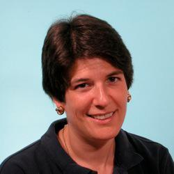

user@example.com
user@example.com
As our computational infrastructure races gracefully forward into increasingly parallel multi-core and clustered systems, our ability to easily produce software that can successfully exploit such systems continues to stumble. For years, we've fantasized about the world in which we'd write simple, sequential programs, add magic sauce, and suddenly have scalable, parallel executions. We're not there. We're not even close. Margo will present a radical, potentially crazy approach to automatic scalability, combining learning, prediction, and speculation. To date, they have achieved shockingly good scalability and reasonable speedup in limited domains, but the potential is tantalizingly enormous.
Talk objectives:
- Get people to think out of the box about dealing with our multicore world.
Target audience:
- Anyone interested in taking better advantage of multicore processors.
About Margo
Margo I. Seltzer is a Herchel Smith Professor of Computer Science and the Faculty Director for the Center for Research on Computation and Society in Harvard's John A. Paulson School of Engineering and Applied Sciences. Her research interests are in systems, construed quite broadly: systems for capturing and accessing provenance, file systems, databases, transaction processing systems, storage and analysis of graph-structuree data, new architectures for parallelizing execution, and systems that apply technology to problems in healthcare.
She is the author of several widely-used software packages including database and transaction libraries and the 4.4BSD log-structured file system. Dr. Seltzer was a founder and CTO of Sleepycat Software, the makers of Berkeley DB, and is now an Architect at Oracle Corporation. She is the USENIX representative to the Computing Research Association Board of Directors and a past President of the USENIX Association. She is a Sloan Foundation Fellow in Computer Science, an ACM Fellow, a Bunting Fellow, and was the recipient of the 1996 Radcliffe Junior Faculty Fellowship. She is recognized as an outstanding teacher and mentor, having received the Phi Beta Kappa teaching award in 1996, the Abrahmson Teaching Award in 1999, and the Capers and Marion McDonald Award for Excellence in Mentoring and Advising in 2010.
Dr. Seltzer received an A.B. degree in Applied Mathematics from Harvard/Radcliffe College in 1983 and a Ph. D. in Computer Science from the University of California, Berkeley, in 1992.